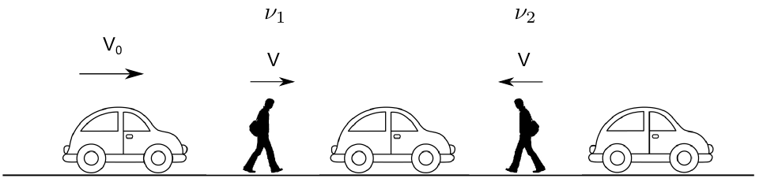
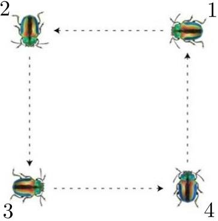

Задача 1. Кинематика
Част 1

Двама души се движат по шосе със скорост V в противоположни посоки. По шосето се движат коли на равни разстояния една от друга в една и съща посока със скорост V0. Нека с $\nu$ 1 и $\nu$ 2 означим Фиг. 1 честотите на преминаване на колите край пешеходците. а) Намерете съотношението $\nu$ 1 / $\nu$ 2 . [4 т.]
Част 2

Четири бръмбара са наредени във върховете на квадрат със страна a. Всеки се движи към свой съсед със скорост V, както е показано на фигурата. Да се определи: а) качествено чрез чертеж видът на траекторията, която описва всеки бръмбар; [2 т.] б) относителната скорост на бръмбар 1 спрямо бръмбар 2 по посока на бръмбар 2; [2 т.] в) след колко време ще се срещнат два съседни бръмбара; [1 т.] Фиг. 2 г) разстоянието, което ще измине всеки бръмбар до срещата си със свой съсед. [1 т.]
Задача 2. Електричество
На фиг. 3 са показани 6 резистора, амперметър и 2 ключа, означени с k1 и k2. Намерете еквивалентното съпротивление RAB между точките A и В в следните случаи: а) k1 и k2 са отворени; [1 т.] б) k1 и k2 са затворени; [3 т.] в) k1 е затворен, а k2 е отворен. [3 т.] г) Батерия с напрежение U е свързана към точки А и В. Намерете тока през амперметъра Фиг. 3 за затворени k1 и k2. [3 т.]
1 Задача 3. Оптика
Част 1 Слънчевата константа k характеризира количеството слънчево лъчение, което пада върху перпендикулярна на слънчевите лъчи повърхност с площ 1 m 2 за време 1 s на разстояние 1 AU (средното разстояние между Земята и Слънцето, 1.5 x 108 km.) от Слънцето. Намерете: а) стойността на k в единици W/m2. Слънцето излъчва с мощност PS = 4 х1026 W. [2 т.] б) равновесната температура T на Земята. Приемете, че Земята поглъща изцяло слънчевата светлина и излъчва като абсолютно черно тяло според закона на Стефан-Болцман ( $\sigma$ = 5.67 10-8 W m-2 K-4) и че температурата е една и съща навсякъде по повърхността ѝ. Приемете, че отсъства парников ефект и че единственият източник на топлина за Земята е слънчевото лъчение.[3 т.]
Част 2 Човек се опитва да запали лист хартия на пълнолуние, като за целта използва сферична събирателна леща с диаметър d и фокусно разстояние f. Намерете: в) интензитета на отразената лунна светлина, измерен от наблюдател на Земята, ако звездната величина на Луната при пълнолуние е mM $\approx$ -13 . Използвайте стойността за слънчевата константа от част 1 а). [2т.] г) съотношението d / f , при което може да се запали хартията, ако температурата на запалване е T0 = 233о C (506 K). Ъгловият диаметър на Луната е $\alpha$ = 0.5о . [3т.] Упътване: Звездната величина е астрономическа мярка за яркостта на небесните обекти. Слънцето има звездна величина mS $\approx$ -27 , а обекти със звездна величина 6 се считат за невидими за невъоръжено човешко око. Звездната величина се пресмята по следната формула:
m1 - m2 = -2.5log10 ( 1 \frac{I }{ I2 }) ,
където I1 и I 2 са интензитетите (количеството лъчение) за два различни източника на светлина (мерени във W/m2 ), a m1 и m2 са съответните звездни величини. Забележка: Приемете, че хартията излъчва като абсолютно черно тяло в полупространството от страна на лещата и не взаимодейства топлинно с други тела. Приемете, че лещата не отразява светлина. Помислете: Можем ли наистина да запалим хартия на лунна светлина?
2